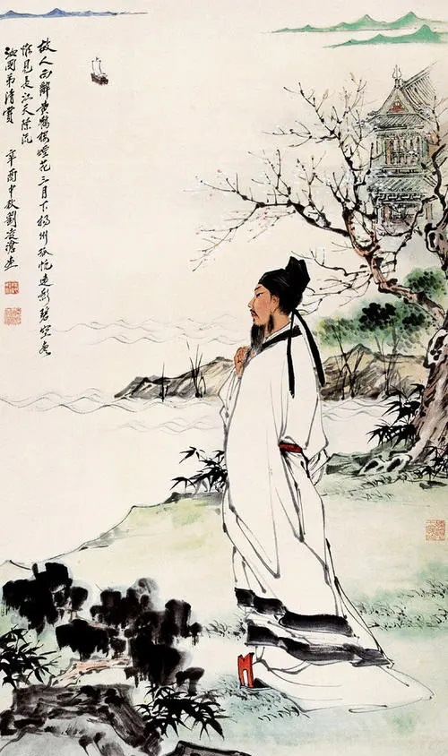
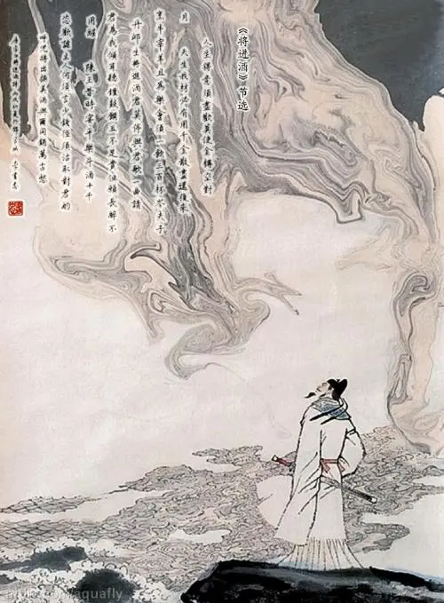
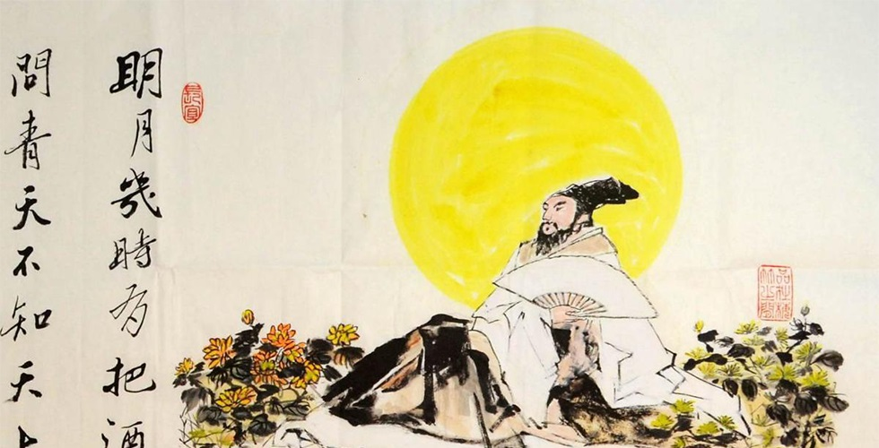

李白
（唐代诗人）
李白（701年—762年12月），字太白，号青莲居士，又号“谪仙人”，唐代伟大的浪漫主义诗人，被后人誉为“诗仙”，与杜甫并称为“李杜”，为了与另两位诗人李商隐与杜牧即“小李杜”区别，杜甫与李白又合称“大李杜”。北京大学教授李志敏评价：“李白之诗呼吸宇宙，出乎道；杜甫之诗德参天地，源于儒，皆至天人合一境界，故能出神入化。” [1] 《旧唐书》记载李白为山东人 [2] ；《新唐书》记载，李白为兴圣皇帝李暠九世孙，与李唐诸王同宗。其人爽朗大方，爱饮酒作诗，喜交友 [3] 。
李白有《李太白集》传世，诗作中多以醉时写的，代表作有《望庐山瀑布》《行路难》《蜀道难》《将进酒》《明堂赋》《早发白帝城》等多首。 [3] 李白所作词赋，宋人已有传记（如文莹《湘山野录》卷上），就其开创意义及艺术成就而言，“李白词”享有极为崇高的地位。
李白有《李太白集》传世，诗作中多以醉时写的，代表作有《望庐山瀑布》《行路难》《蜀道难》《将进酒》《明堂赋》《早发白帝城》等多首。 [3] 李白所作词赋，宋人已有传记（如文莹《湘山野录》卷上），就其开创意义及艺术成就而言，“李白词”享有极为崇高的地位。

个人作品
人物争议
生死考证
关于李白的出生地，唐人所撰李白身世资料，最可信者，除魏颢、李阳冰分别为李白编集所写的序文外，再就是刘全白、范传正于李白身后为他写的碣记和碑序。“白本家陇西，乃放形，因家于绵。身既生蜀，则江山英秀。”（魏颢《李翰林集序》）；“神龙之始逃归于蜀，复指李树而生伯阳；惊姜之夕长庚入梦，故生而名白，以太白字之。”（李阳冰《草堂集序》）；“君名白，广汉人。”（刘全白《唐故翰林李君碣记》）；“神龙之初，潜还广汉。...公之生也，先府君指天枝以复姓，先祖母梦长庚而告祥。”（范传正《唐左拾遗翰林学士李公新墓碑并序》）。魏称绵，李称蜀，刘、范称广汉。实则地点相同而有详略之别，魏、李、范三人均指明李白生于蜀中，为蜀中绵州（汉称广汉）人。20世纪70年代，郭沫若提出“碎叶”说。20世纪90年代以后，随着李白研究的深入，学术界普遍采纳李白生于绵州昌隆县青莲乡（今四川省江油市青莲镇）的说法。
安史之乱发生的第二年（756年），他参加了永王李璘的幕府。永王与肃宗争夺帝位的斗争兵败之后，李白受牵连，流放夜郎（今贵州境内），途中遇赦写下《早发白帝城》。晚年投奔族叔当涂县令李阳冰，不久即病逝，也有说是：“醉致疾亡”，就是喝酒引发疾病而死（见皮日休《李翰林诗》）。也有说是单纯的喝酒猝死（见《旧唐书》）。也有说是醉酒入江中捉月溺死，这种说法古已有之且广为流传。
身世之谜
关于诗仙李太白的家世和身世，唐代当时就讳莫如深，据《新唐书》记载，李白为兴圣皇帝（凉武昭王李暠）九世孙 [20] 。对其祖父、曾祖父，史料无一记载。李白自己很少谈及家世，偶有所及，也往往只提远祖，讳言近亲，闪烁其辞，故布疑阵。尽管如此，还是有人从历史的尘幕中看出了蛛丝马迹。最早提到此事的是唐梓州刺史于邵，他最早在李白故里立碑纪念，明末曹学全《蜀中名胜记》载有碑文内容：“白本宗室子，其先避地客蜀，居蜀之彰明，太白生焉”。接着提到此事的乃宋人杜田。
关于家世问题，第一种说法为李白是李暠之后。第二种说法是李白为李贤、李穆之后。第三种说法为李白是李抗之后。刘伯涵认为李白应出生于陇西李氏的一般平民家庭。第四种说法为李白是太子李建成之后。徐本立《李白为李渊五世孙考》一文认为李白应为太子建成玄孙。第五种说法为李白是李瑗之后。徐本立在写了《李白为李渊五世孙考》后，很快又发表了《李白为李渊五世孙考补正》，认为李白也可能是李瑗的后代。第六种说法为李白是李轨之后。周维衍认为李白是与李渊抗衡失败被诛的李轨的第四代或第五代孙。第七种说法为李白是李伦之后。胥树人的《李白和他的诗歌》认为李白是陇西李氏丹阳房始祖李伦之后。除汉人说以外还有非汉人说。范伟的《关于李白氏族的研究》认为李白是汉之苗裔、胡之身躯的中原和北地的混血儿。 [33] 陈寅恪断言李白为"西胡族类之深于汉化者"。陈寅恪的考辨既是基于实证经验,也鲜明体现了其中古历史研究中所持的种族文化观念。詹锳、松浦友久等人亦认同此说。 [34] 胡怀琛、幽谷更力证李白“突厥化”程度很深,是“从碎叶突厥家庭中出来的”。此外还有杨宪益等提出“李白是氐人”等等。
出生地
李阳冰《草堂集序》、范传正《唐左拾遗翰林学士李公新墓碑并序》两文叙述李白出生都在“逃归于蜀”、“潜逃广汉”之后，所以历代都认为李白生于蜀中。但李白在肃宗至德二年写的《为宋中臣自荐表》中却说：“臣伏见前翰林供奉李白年五十有七。”至德二年57岁，其生年应当是武后长安元年，至神龙初迁蜀时李白已5岁，显然不可能生于蜀中。
1971年人民文学出版社出版郭沫若的《李白与杜甫》，认为李白“出生于中亚细亚的碎叶城”，其位置在今哈萨克境内的托克马克。郭沫若的观点得到众多学者的响应。进入80年代，学界展开了对李白出生地的大讨论。将各家所持的论点按地域划分，可分为以下四种。
首先是蜀中说。郑畅《李白究竟出生在哪里》认为李白于神龙元年出生于绵州昌明县青莲乡。王少志、蒋志《、裴斐也持蜀中说。 [33] 其次是条支说。刘友竹《李白的出生地是条支》和康怀远《对〈李白出生地是条支〉的一点补充》认为唐代条支的地望在今阿富汗中都一代，其治所就是昔之鹤悉那，今之加兹尼，在唐代时属安西大都护府管辖。 [33] 第三是焉耆碎叶说。李从军《李白出生地考异》（《李白考异录》）谓李白出生于“焉耆碎叶”，即今新疆境内博思腾湖畔的焉耆自治县和库车一带。王耀华《关于李白出生地史料的辨析》也认为李白的故乡应是安西的焉耆碎叶。 [33] 四是长安说。刘开扬《李白在蜀中的生活和诗歌创作》认为李白《上安州裴长史书》中称“奔流咸秦，因官寓家”的“咸秦”指长安，由此推论李白生于长安。
进入90年代，关于李白出生地的讨论仍在继续，且探讨的角度有所拓展。周勋初《李白及其家人名字寓意之推断》认为李白父子三代的名字全都暗示了李白一家来自西域，并寓其本姓“李”；又从李白为死去的朋友吴指南实行“剔骨葬法”（又称二次检骨葬）一事出发，认为这与他接受突厥文化或蛮族文化的影响有关。王伯奇《李白的籍贯探讨》从籍贯的概念入手进行讨论，结论是只有山东才是李白的籍贯。
综合以上众说可知，关于李白出生地的争论主要集中在“蜀中说”与“西域说”两种观点上。不论是哪一种说法，所依据的基本史料不外乎以下几种：李白《上安州裴长史书》，李白《与韩荆州书》，李阳冰《草堂集序》，魏万《李翰林集序》，刘全白《唐故翰林学士李君墓碣记》，范传正《唐左拾遗翰林学士李公新墓碑并序》，刘煦《旧唐书·文苑传》，宋祁《新唐书·文艺传》。虽然基本材料相同，结论却差异甚大。为此，李家烈《李白的家世与生籍考辨》一文从李白生平史料的存世状况出发，认为基本材料的诸多不实之处动摇了它们的权威性，因此，在未发现新见史料的前提下不宜急于创立新说，立足于对已有的史料进行重新检讨和反思才是谨慎和理智的做法。


